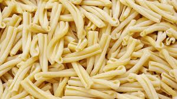

|
 |
Anelli Siciliani |
Sicilian Rings |
Sicily, Italy |
From "anello," meaning "ring" |
Often used in baked pasta dishes. |
Pasta al Forno |
Small, ring-shaped |
Hearty sauces, baked dishes |
Sicily |
To create a shape that holds sauce well in baked dishes. |
 |
 |
Fusilli |
Spindles |
Southern Italy |
From "fuso," meaning "spindle" |
The spiral shape helps it hold a lot of sauce. |
Pasta Salad |
Spiral, corkscrew shape |
Pesto, pasta salads, meat sauces |
Southern Italy |
To create a shape that holds sauce well. |
|  |
 |
Casarecce |
Homemade |
Sicily, Italy |
Means "homemade" or "country-style" |
Has a twisted shape with a groove down the center. |
Pasta alla Norma |
Short, twisted, with a groove |
Hearty sauces, vegetable dishes |
Sicily |
To mimic the texture of homemade pasta. |
|
|
Radiatori |
Radiators |
Italy |
Named after radiators |
The shape has many ridges and ruffles. |
Mac and Cheese |
Small, ridged, ruffled |
Thick sauces, cheese dishes |
Italy |
Designed to have a large surface area to hold sauce. |
 |
 |
Cappelletti |
Little Hats |
Emilia-Romagna |
To create a small, delicate pasta for soups and broths. |
 |
 |
Rigatoni |
Large Grooved |
Italy |
From "rigato," meaning "ridged" |
Large, tube-shaped pasta with ridges. |
Rigatoni al Ragù |
Large, tube-shaped, ridged |
Hearty sauces, baked dishes |
Italy |
To create a pasta that can hold heavy, chunky sauces. |
|
 |
Stelline |
Little Stars |
Italy |
From "stella," meaning "star" |
Tiny, star-shaped pasta. |
Pastina Soup |
Tiny, star-shaped |
Soups, broths |
Italy |
To create a small, delicate pasta for light soups. |
|
|
Orzo |
Barley |
Italy |
Means "barley" in Italian |
Small, rice-shaped pasta. |
Orzo Salad |
Small, rice-shaped |
Salads, soups, side dishes |
Italy |
To create a pasta that can be used in place of rice. |
|
|
Lumaconi |
Large Snails |
Italy |
From "lumaca," meaning "snail" |
Large, shell-shaped pasta, good for stuffing. |
Stuffed Lumaconi |
Large, shell-shaped |
Stuffing, baking |
Italy |
To create a pasta that can hold a substantial amount of filling. |
 |
 |
Conchiglie Rigate |
Ridged Shells |
Italy |
From "conchiglia," meaning "shell" and "rigate" meaning ridged |
Shell-shaped pasta with ridges. |
Pasta Salad |
Shell-shaped, ridged |
Sauces, salads |
Italy |
To create a pasta that traps sauce inside the shell. |